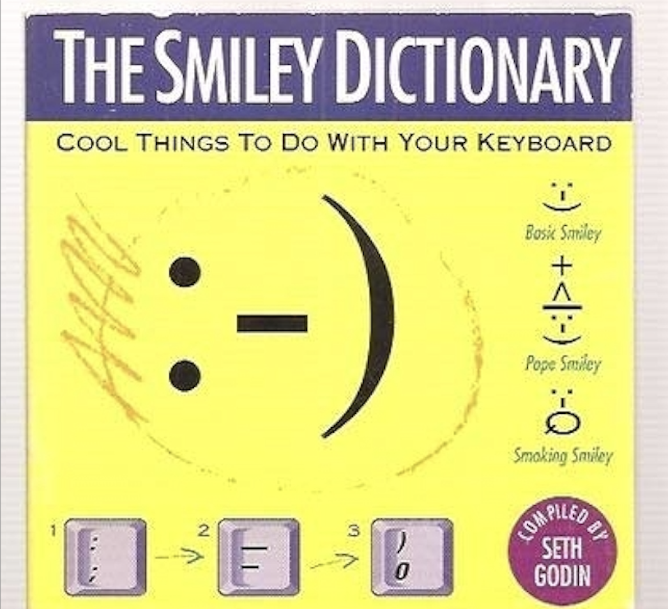

| Головна | Каомодзі | Емодзі | Стилі смайликів | The Smiley Company |
Смайлики (емотикони) — це поєднання символів, таких як розділові знаки, цифри та літери, які використовуються для передачі емоцій у текстовому спілкуванні. Вони допомагають передати настрій, реакцію або ставлення без використання додаткових слів.
Перші сучасні смайлики з’явилися у 1982 році завдяки Скотт Фальман. Він запропонував використовувати :-) для позначення жартів і :-( для серйозних або сумних повідомлень:
Пропоную таку послідовність символів для маркерів жартів:
:-)
Прочитайте це збоку. Насправді, ймовірно, економічніше позначати речі, які НЕ є жартами, враховуючи сучасні тенденції. Для цього використовуйте:
:-(

Смайлики швидко поширилися через ранні інтернет-мережі, такі як ARPANET і Usenet, і незабаром стали популярними у цифровому спілкуванні. Спочатку використовували класичні :-) та :-(, але користувачі експериментували з іншими символами, такими як *, &, %, #, щоб передати різні емоції. Скотт Фальман навіть припускав, що смайлики можуть частково замінити мову.| :-) | простий смайлик |
| :-* | поцілунок |
| ;-( | плачучий смайлик |
| О:-) | смайлик ангела |
| :-> | саркастичний смайлик |
| :-\ | скептичний смайлик |
| :-P | жартівливість |
| B-) | смайлик що носить окуляри |
| :-O | балакучий смайлик |
| %-) | смайлик після 15 годин безперервного споглядання екрану |
Ці приклади добре показують, як у ранніх інтернет-розмовах використовували різні комбінації символів для передачі емоцій і настроїв.
Сьогодні смайлики — це не просто символи, а важливий інструмент комунікації. Вони допомагають:
Смайлики стали важливою частиною цифрового спілкування, допомагаючи передавати емоції та настрій у тексті, і заклали основу для сучасних емодзі та інтернет-культури загалом.